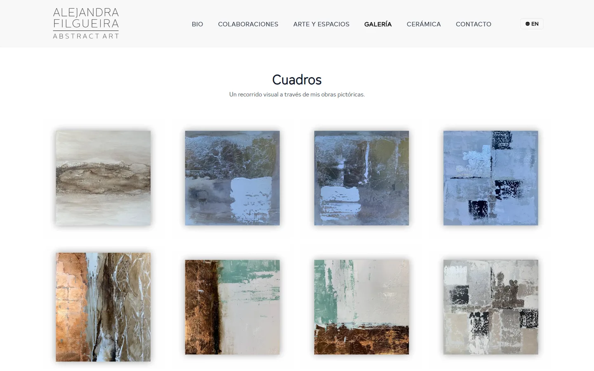
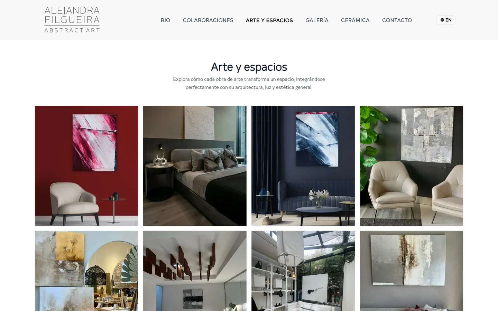
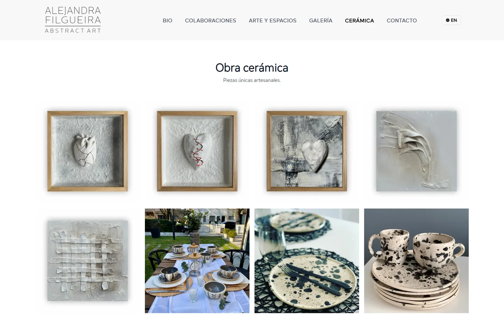

The briefEl encargo
(01)An artist whose work lived on Instagram. She needed a place of her own that felt like a gallery.Una artista cuya obra vivía en Instagram. Necesitaba un lugar propio que se sintiera como una galería.
Alejandra paints abstract work, makes ceramics and places her pieces in interior design projects. She also runs workshops for companies and shows in exhibitions.Alejandra pinta obra abstracta, hace cerámica y ubica sus piezas en proyectos de interiorismo. También da talleres para empresas y participa en exposiciones.
The brief: a minimal, highly visual site in two languages, with her career and CV, linked to her Instagram, fast on any device and with only subtle motion.El pedido: un sitio minimalista y muy visual en dos idiomas, con su trayectoria y su CV, conectado a su Instagram, rápido en cualquier dispositivo y con movimiento sutil.
Six rooms, one gallerySeis salas, una galería
(02)- 01Bio
Her story, her studio process and her CV, downloadable in both languages.Su historia, su proceso en el taller y su CV, descargable en los dos idiomas.
- 02CollaborationsColaboraciones
Exhibitions, media, workshops for companies and art at events.Exposiciones, medios, talleres para empresas y arte en eventos.
- 03Art & spacesArte y espacios
Her pieces inside real interiors, to show how they transform a room.Sus piezas dentro de interiores reales, para mostrar cómo transforman un ambiente.
- 04GalleryGalería
The paintings, one by one, with room to breathe.Los cuadros, uno por uno, con aire alrededor.
- 05CeramicsCerámica
Unique handmade pieces, from wall reliefs to tableware.Piezas únicas hechas a mano, de relieves de pared a vajilla.
- 06ContactContacto
A form that reaches her inbox directly, plus WhatsApp and her socials.Un formulario que llega directo a su correo, más WhatsApp y sus redes.



Quiet detailsDetalles que no se notan
(03)Two languages, one switchDos idiomas, un botón
Every page in Spanish and English, and the language stays as you browse.Cada página en español e inglés, y el idioma se mantiene al navegar.
Instagram inside the siteInstagram dentro del sitio
An Instagram grid on the site that leads to her profile and community.Una grilla de Instagram en el sitio que lleva a su perfil y su comunidad.
Exhibitions carouselCarrusel de exposiciones
Exhibition posters you can swipe through, without distorting them.Los afiches de sus exposiciones para deslizar, sin deformarlos.
CV in both languagesCV en los dos idiomas
The right PDF for each visitor, a click away.El PDF que corresponde a cada visitante, a un clic.
Contact without a backendContacto sin servidor propio
The form sends straight to her email, with WhatsApp as a second door.El formulario manda directo a su correo, con WhatsApp como segunda puerta.
Subtle motionMovimiento sutil
Soft transitions on scroll and a mobile menu that closes when you tap outside.Transiciones suaves al hacer scroll y un menú en el celular que se cierra al tocar afuera.
Built with the clientHecho junto a la clienta
(04)An artist reads a site like a canvas. Every word and every crop matters.Una artista mira un sitio como mira un lienzo. Cada palabra y cada recorte importan.
After a written proposal, I designed and built the site in about six weeks, and then we refined it together through rounds of marked-up screenshots: titles, translations, image crops and the order of each page.Después de una propuesta escrita, diseñé y armé el sitio en unas seis semanas, y después lo pulimos juntos con rondas de capturas marcadas: títulos, traducciones, recortes de imágenes y el orden de cada página.
How I workedCómo trabajé
(05)- D.01
Bilingual all the way throughBilingüe de punta a punta
Translating the text was not enough: some English buttons still led to Spanish pages. I made every link keep the visitor's language, so nobody gets switched halfway through.Traducir los textos no alcanzaba: algunos botones en inglés todavía llevaban a páginas en español. Hice que cada enlace respete el idioma del visitante, así nadie cambia de idioma a mitad de camino.
2languages on every pageidiomas en cada página - D.02
Corrections as a checklistLas correcciones, como lista
The client sent her feedback as screenshots marked by hand. I turned each mark into a task and closed them one by one: titles, capitalization, wording in both languages and images to remove.La clienta mandaba sus comentarios en capturas marcadas a mano. Convertí cada marca en una tarea y las cerré una por una: títulos, mayúsculas, textos en los dos idiomas e imágenes para sacar.
4pages of final corrections, all resolvedpáginas de correcciones finales, todas resueltas - D.03
Artwork is never distortedLa obra nunca se deforma
For an artist, a stretched image is a damaged painting. Every image keeps its original proportions on any screen, and they are compressed so the site stays fast.Para una artista, una imagen estirada es un cuadro dañado. Cada imagen mantiene sus proporciones originales en cualquier pantalla, y están comprimidas para que el sitio siga siendo rápido.
91images, at their real proportionsimágenes, en sus proporciones reales - D.04
Looked after after launchCuidado después de publicar
The site kept getting updates after it went live, including a security patch for a critical vulnerability in React and Next.js as soon as it was published.El sitio siguió recibiendo cambios después de publicarse, incluido un parche de seguridad por una vulnerabilidad crítica de React y Next.js apenas salió.
134commits, from first sketch to maintenancecommits, del primer boceto al mantenimiento